Your browser doesn't support the features required by impress.js, so you are presented with a simplified version of this presentation.
For the best experience please use the latest Chrome, Safari or Firefox browser.
Snappy Personnal Desktop :
Le poste de travail Ubuntu
nouvelle génération
“ Depuis qu'ils veulent conquérir le marché du smartphone, Canonical ne s'interesse plus au poste de travail ! ”
Les Gens
Un peu d'Histoire...
Un peu d'Histoire...
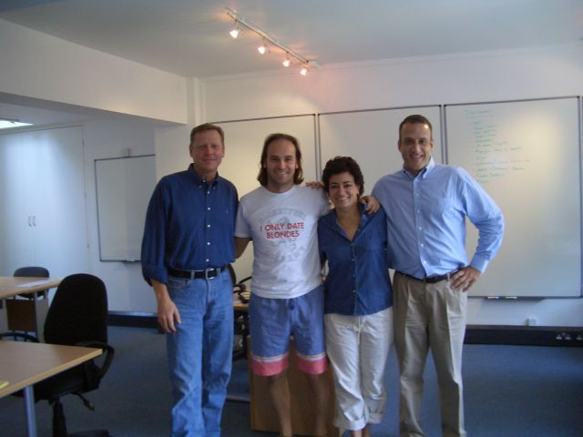
-
Mars 2004 :
-
Mark Shuttleworh fonde Canonical
-
Octobre 2004 :
-
Sortie d'Ubuntu 4.10 Warty Warthog
Pas de version 4.04
4.04 ERROR
Sorry this release was not found
Ubuntu Serveur
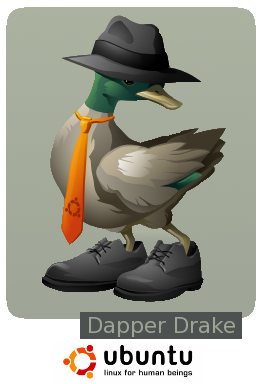
Ubuntu 6.06 LTS Dapper Drake
- > Première version Support à Long terme
- > Ubuntu version server
Ubuntu Serveur - Landscape
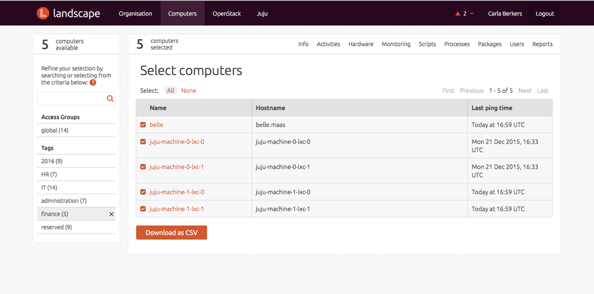
Landscape
Outils de gestion, d'inventaire, de maintenance et de conformité de parc machines Ubuntu
Ubuntu Serveur - Juju
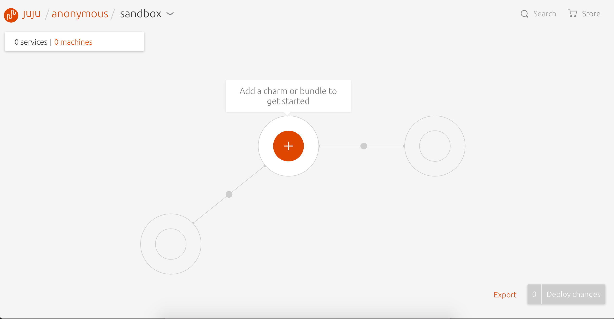
Juju
L'outils de modélisation et d'orchestration pour Ubuntu
Ubuntu Server - MaaS
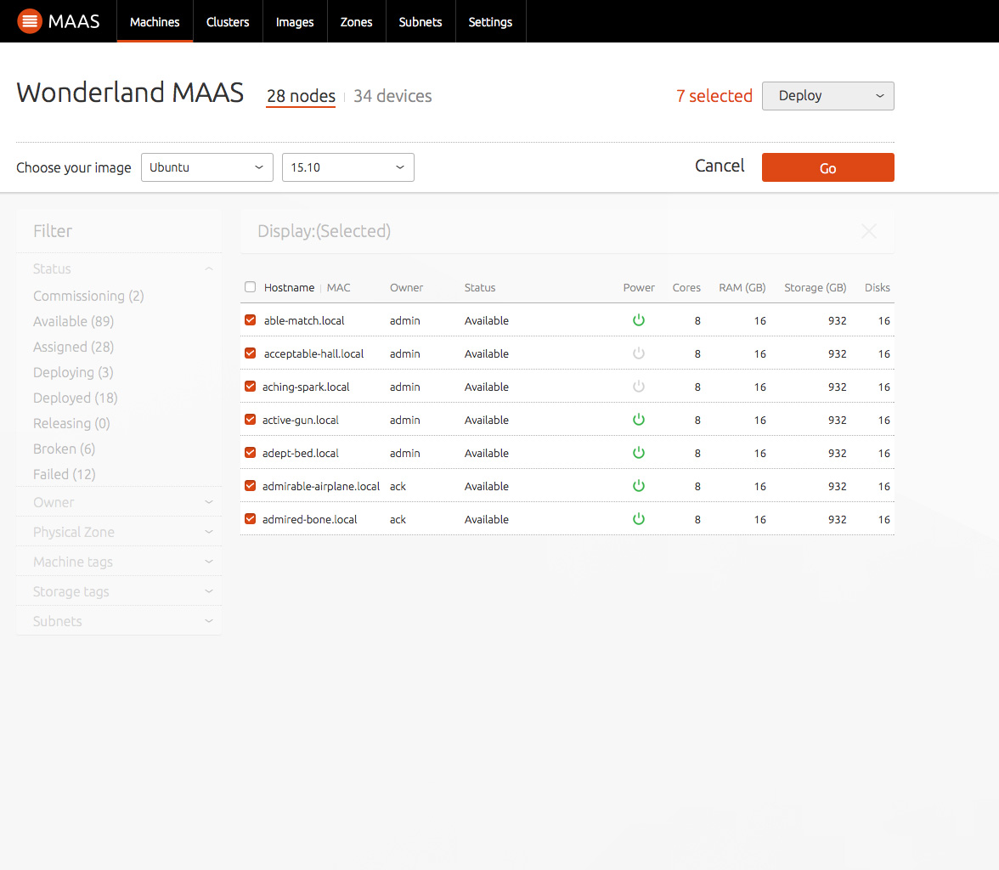
MaaS
Gestionnaire permettant de gérer un parc de serveur physique de la même manière que le cloud.
Conçu pour les DevOps, à des fins de scalabilité, pour le Big Data, les Cloud privés, les Plateformes en tant que Service...
Ubuntu Netbook - Ubuntu Netbook Remix/Edition
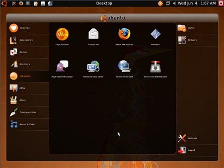
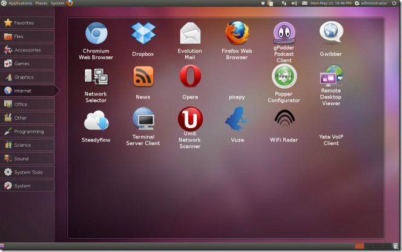
Ubuntu pour Netbook
> 2008 : Canonical + Moblin = Ubuntu Netbook Remix, une saveur dédiée aux petits écrans
> 2010 : Ubuntu Netbook Remix change de nom et devient Ubuntu Netbook Edition
Ubuntu Desktop - Unity
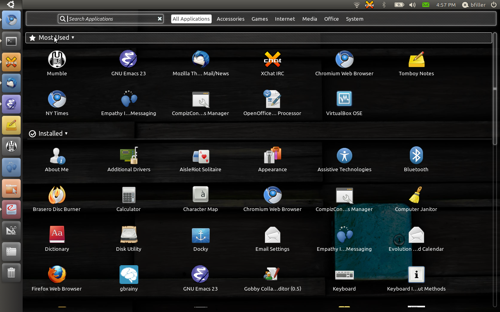
Unity
A partir de Ubuntu 11.04, Unity devient l'interface par défaut d'Ubuntu pour le poste de travail
Ubuntu Desktop - Recherche enligne ou en local
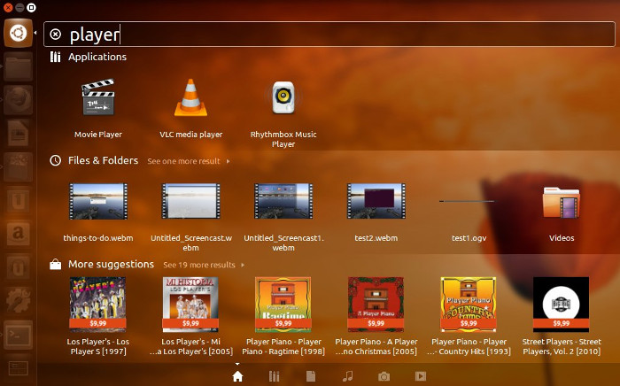
Recherche unifiée
Introduction de la recherche en ligne et en local avec Ubuntu 12.10 (Unity 6)
→ Polémique sur la recherche Amazon intégrée au bureau #AmazonGate
Ubuntu Desktop - Smartscopes Services
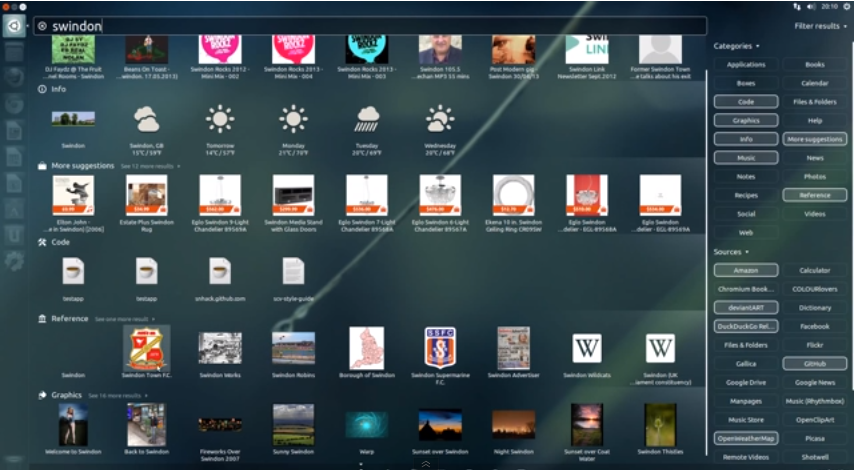
Smartscopes Services
Devant la gronde, le fonctionnement de la recherche unifiée est revue.
Ubuntu 13.10 : Arrivée des Smartscopes Services (Unity 7). Plus de recherche en ligne en direct, les Smartcopes Services font office de passerelles et anonymisent les requêtes
Ubuntu pour téléphones, tablettes et bien d'autres
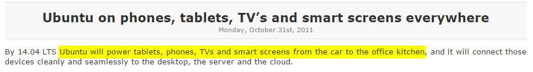
“ [...] Ubuntu alimentera des tablettes, des téléphones, des TVs et des écrans intelligents, de la voiture à la cuisine [...] ”
Mark Shuttleworth
“ A force de s'éparpiller, Canonical a oublié le poste de travail ”
TrollFace
Ubuntu - Explorer de nouveaux horizons
Les Devs Ubuntu explorent de nouveaux horizons
Ubuntu 13.10 :
- > Avancement sur la méthode de mises à jour basées sur des images
- > Avancement sur MIR, le serveur graphique remplaçant X
- > Avancement sur les conteneurs d'applications
Ubuntu - Explorer de nouveaux horizons
Les Devs Ubuntu explorent de nouveaux horizons
Ubuntu 14.04 LTS :
- > Sortie de LXC 1.0 (système de VM basé sur les conteneurs Linux)
- > Début de la réflexion sur la livraison de MAJ instantanées PaaS, SaaS, IdO...
Ubuntu - Explorer de nouveaux horizons
Les Devs Ubuntu explorent de nouveaux horizons
Ubuntu 14.10 :
- > La première image d'une plateforme installable de l'IdO au Cloud est presque finalisée
Ubuntu - Explorer de nouveaux horizons
Les Devs Ubuntu explorent de nouveaux horizons
Décembre 2014 :
- > Sortie de Snappy Ubuntu Core
Ubuntu est prêt pour la convergence totale
La Convergence Totale,
Qu'est-ce que c'est ?
Convergence - Continuité de l'expérience utilisateur
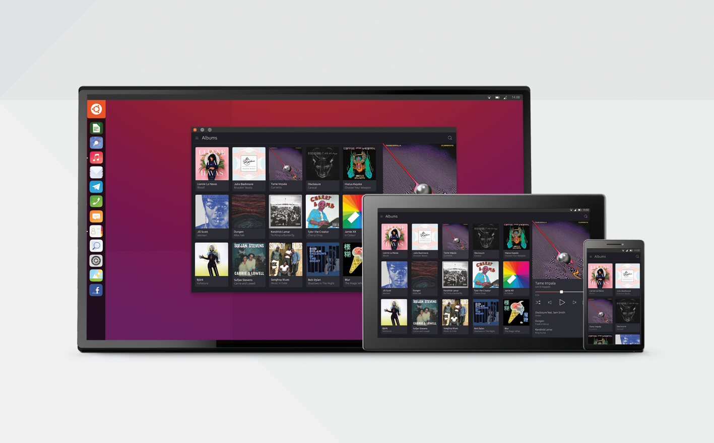
L'imagerie populaire : la continuité de l'expérience utilisateur
- > Une expérience unifiée sur toutes les formes d'écran
- > Commencer une expérience utilisateur sur un écran, la continuer sur un autre
- > Transformer son téléphone ou sa tablette en ordinateur de bureau
Convergence - ex: Continuum de Microsoft
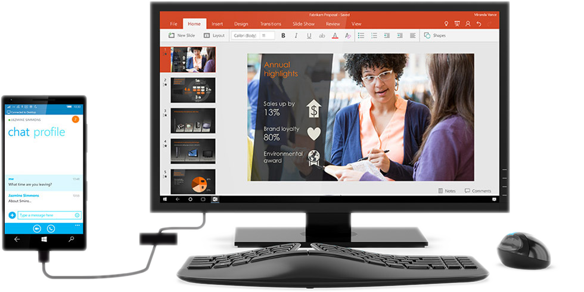
Ex : Continuum de Microsoft pour Windows 10
- > Utilisation du téléphone comme un PC
- > Travailler sur un deuxième écran tout en utilisant son smartphone
Convergence - ex: Continuity d'Apple
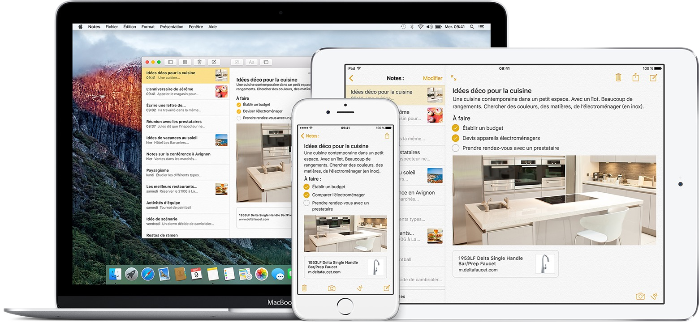
Ex : Continuity d'Apple pour iOS 9
- > Prolongement de l'expérience utilisateur d'un écran à l'autre
- > Partage de la connexion internet
- > Possibilité d'appel et d'envoie de SMS via un autre appareil Apple sur le même réseau WiFi
Convergence - ex: Convergence d'Ubuntu
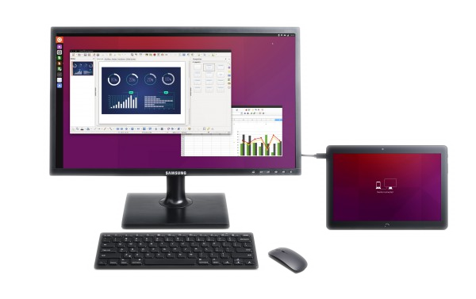
Ex : Convergence d'Ubuntu (bq Aquaris M10)
- > Utilisation du téléphone/tablette comme un PC
- > Travailler sur un deuxième écran tout en utilisant son smartphone
- > Une interface tactile et une interface "poste de travail"
- > La tablette/telephone sert de touchpad
Convergence Totale
La convergence N'EST PAS la convergence totale !
Convergence Totale - Continuité de l'expérience développeur
La convergence totale : la continuité de l'expérience utilisateur
- > Une expérience de développement unifiée sur toutes les plateformes
- > Développer une application depuis son portable, la déployer sur un objet
- > Quasiment tous les objets peuvent devenir éligibles aux applications
Convergence Totale - Continuité de l'expérience développeur
La convergence totale : la continuité de l'expérience développeur
- > Une expérience de développement unifiée sur toutes les plateformes
- > Développer une application depuis son portable, la déployer sur un objet
- > Quasiment tous les objets peuvent devenir éligibles aux applications
Convergence Totale - Développement multi-plateforme simplifié
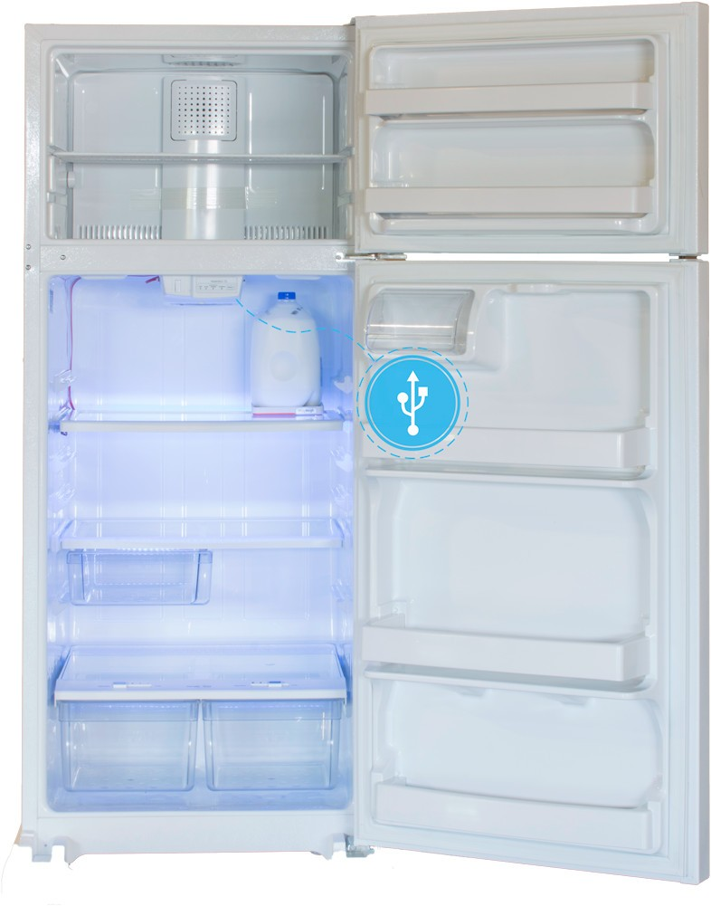
La convergence totale : le développement multi-plateforme simplifié
> Ex : Le réfrégirateur Chillhub de FirstBuild
Convergence Totale - Développement multi-plateforme simplifié
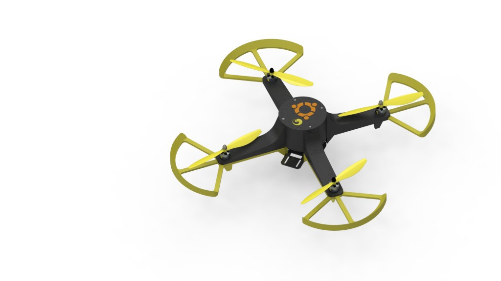
La convergence totale : le développement multi-plateforme simplifié
> Le drone Erle-copter de Erle Robotic
Convergence Totale - Développement multi-plateforme simplifié
La convergence totale : le développement multi-plateforme simplifié
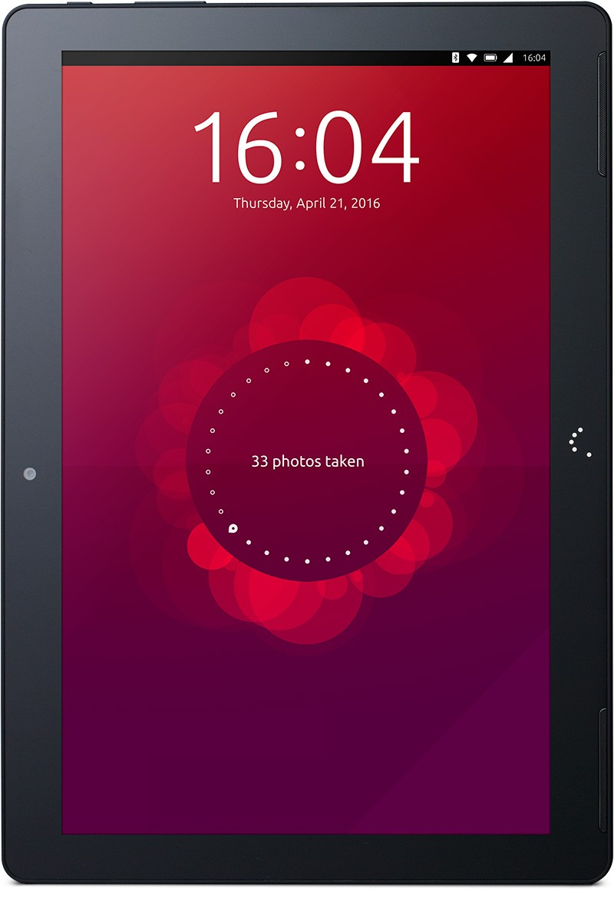
Convergence Totale - Développement multi-plateforme simplifié
La convergence totale : le développement multi-plateforme simplifié
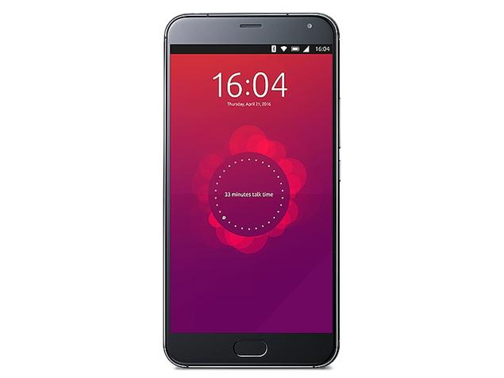
Convergence Totale - Développement multi-plateforme simplifié
La convergence totale : le développement multi-plateforme simplifié
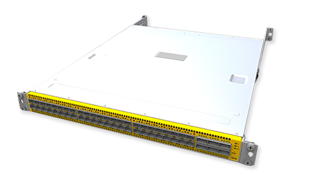
Convergence Totale - Développement multi-plateforme simplifié
La convergence totale : le développement multi-plateforme simplifié
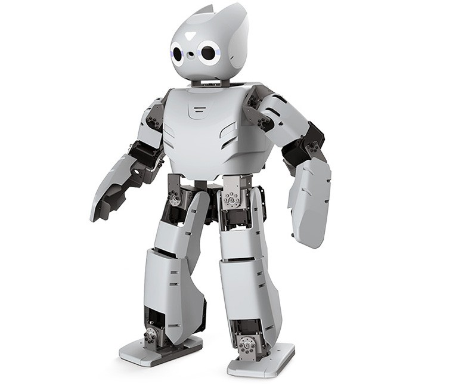
Qu'est-ce que Snappy ?
Qu'est-ce que Snappy ? - Description
- > Un coeur léger Ubuntu en lecture seule
- > Des mises à jours transactionnelles
- > Une isolation rigoureuse des applications
Qu'est-ce que Snappy ? - Description
- > Un coeur léger Ubuntu en lecture seule
- > Des mises à jours transactionnelles
- > Une isolation rigoureuse des applications
Qu'est-ce que Snappy ? - Description
- > Un coeur léger Ubuntu en lecture seule
- > Des mises à jours transactionnelles
- > Une isolation rigoureuse des applications